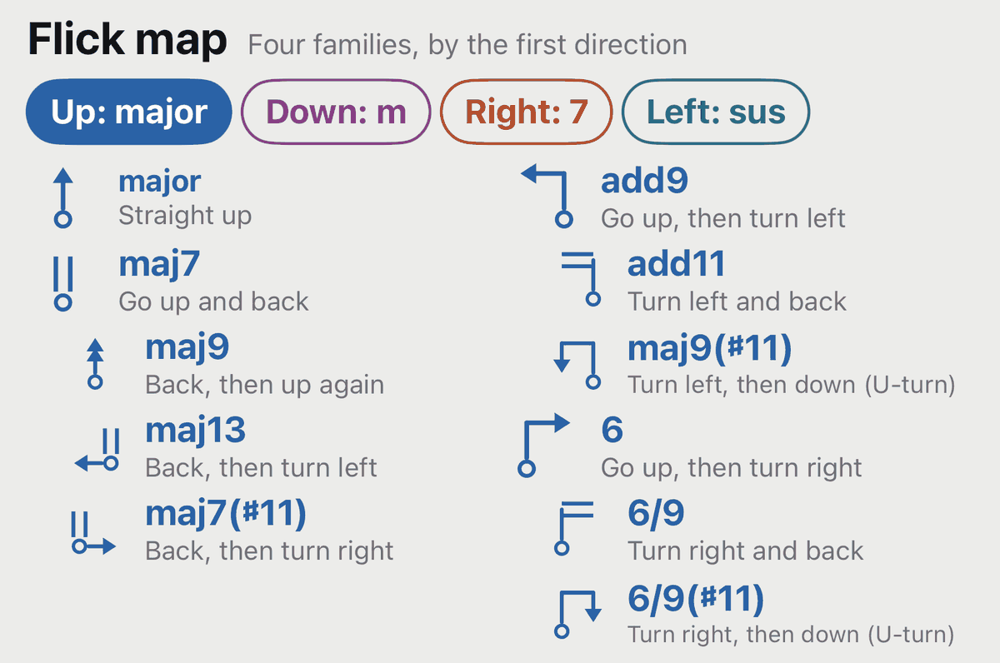

How to Play
The full guide is inside the app. Start with Stage 1 of "Road to Sing & Play".
The screen
- Pads (left hand): press one to choose a chord. Pads make no sound.
- Plate (right hand): this is where the sound comes from. Only your right hand plays sound.
How to hold it
At first, you can hold it in both hands, like a game controller.
Later, move on to the upright grip: stand the iPhone up with the screen facing your right side, tilted a little so you can see it from above. The Dynamic Island end rests in your right palm, and your right thumb plays the plate. Your left hand doesn't hold the iPhone, so it can move freely over the pads. "Road to Sing & Play" in the app walks you through it stage by stage.
Your right hand
| Swipe | Swipe the plate up and down to strum |
|---|---|
| Tap | Tap with one finger to play one note at a time |
| Two-finger tap | Put two fingers down at the same time and lift them without moving for a bright harmonic |
Change the chord type
Flick while holding a pad to change the chord type, such as a 7th. The in-app How to Play and the Flick map show which flick makes which chord.

Bluetooth headphones and speakers delay the sound by 0.1–0.3 s, so playing in time is nearly impossible. Use the iPhone speaker or wired headphones.